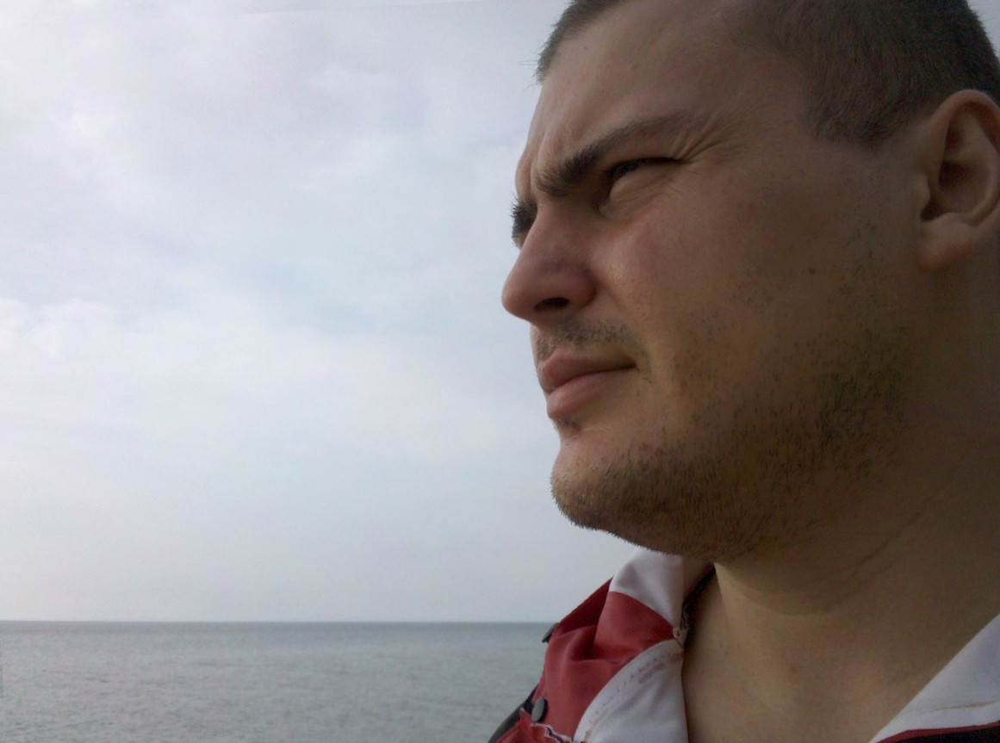

June 15th 2020, 10:31:53 pm EDT

Listen
Every one in a while I bicycle to the south end,
and check if they did any work, and how it went.
I always find it old, and full, of bumps thorns and grass,
no matter how hard I bicycle, there is never a way to pass.
I work up this morning, and said "It is time for another check!",
I got my gear together, and squirted sunblock all around on my neck.
And as soon as got too far to go back,
my bicycle, creaked, and shuddered, and squeaked - and I was like "What the heck?"
The noise came from the bottom where the pedals are,
and only the left pedal made noise thus far.
And the noise would not cease,
I had the tools but no grease.
So I said to my self in a deep tone "It is time for Field Repair!,
and although I have no grease, I will not despair.""
First, I checked the pockets of my new red pants, the short ones that I like,
but there was nothing there that could fix my bike.
So I looked to my day pack, and the solution sat right next to my bicycle lock,
I squeaked! "I do have grease, it is in my sun block!"
So I squired some on the pedals and the connecting rod,
and though I admit the solution was a bit odd...
I was back on the road, riding smoothly and quietly like a pro,
after all, I had places to go.
I made it to the southern edge, it was 15 miles away,
they still didn't fix anything, bumps and shrubs were blocking the way.
I took a photo to share with you,
just in case you were thinking about going or pushing through.

The actual ancient end of the trail is not that far away,
about 2.6 miles south, but you are better off walking the rest of the way.
Even better than following the ancient end, is to go to the park,
and head for lake Erie, but make sure to leave early, so that you don't bicycle back after dark.
The trick to make it to the lake is to turn right before the Nature Center,
and head through Flat Rock, to Maple Beach, you don't have to pay to enter.
I think of it as the real end to the trail,
reaching it always make for a good tale.
June 14th 2020, 11:55:32 pm EDT

Listen
Life shouldn't be about beating your best,
just as important as rising, is your day of rest.
No matter how important your athletic quest,
or how upon your arrival you are going to be blessed.
Everyone, needs to get some rest,
days will only get longer when you are stressed.
If you must,
imagine you are a Bird of Fantastic Plumage, and your bed is a nest.
Come morning, fling up your messy crest,
and puff up your chest.
And tweet, about how you are not getting dressed,
because you are too stressed, and you are having your rest.
And explain to those confused, that you are not speaking in jest,
make it clear that this is not, a test.
Today is your day of rest,
at best, you will be having a nice cup of tea, should you feel pressed.
Allow strength to return to you, so that you are at your best,
tomorrow, or in few days, you'll resume your quest.
Once you are not feeling so stressed,
you'll show the world that You are the Best.
June 13th 2020, 11:14:02 pm EDT

Listen
My Friends,
Your youth holds a great power,
a power that you can hold on to throughout your entire existence.
It is the power of creating a life that you will love,
a life that will help you see with great clarity.
A Life of Wisdom.
But you must be careful,
as the world may not yet be ready to help you.
Not everyone will know about growing up,
and people will say: "How was I supposed to know?"
And they are not going to be the bad guys,
and you will be inclined to listen to their advice.
And the path will be paved with good intentions,
it maybe the correct path, but it won't be the right one.
Please, focus on building your own self,
your strength, your wisdom, your power.
Focus on building the best you,
the you that you are meant to be, that the world needs.
Because if you listen to everybody else,
you will not grow up, and they will blame you for not being able to help them.
You are not going to be able to explain to them,
that you are weak because of them,
because you tried to help them too early.
And if you could, all they could say will be:
"How was I supposed to know?"
Please, you have no choice,
but to learn to control your own future.
You can try to use your imagination,
to get in touch with your Elder Self;
And ask "What are your regrets?",
"Where did it go wrong?"
Please, carefully evaluate your choices,
wisely build your Mind and Body.
Pay attention to all the choices you are making,
as they dictate the Beautiful Life Ahead of You.
The teachers are not ready, we are not in the Era of Wisdom yet,
people are struggling to understand life.
Many make choices that all too early box them in,
and not all their advice will apply to you.
Not all the things that you think box people in,
actually constrain them, there are many contexts to all the paths.
All lives are beautiful, and there are enough forks in the road,
for people to navigate back to where they want to be.
But, when a mistake occurs, it will weigh you down for a time,
if you are careful, you can avoid the worst of it.
And whatever does happen, regardless of how hard you tried to avoid it,
will not crush you, because you will know you did your best.
Please, be careful in life, be beautiful, and strong,
learn, and think, and evaluate, and judge, and grow in wisdom.
Following everyone's advice, will create a lot of noise,
listening to everything from everywhere will never align with you.
You must lean to pace yourself,
and to carefully and wisely follow what interests you.
Your mind is constantly asking questions,
your future depends on having a good intuition, rooted in reality, and in wisdom.
There is nothing you can be force-taught school,
you will not retain things that are out of sequence.
Reaching out for Knowledge and Wisdom in your own sequence, and at your own pace,
is the only way to learn, and build steps, and build on top of those steps.
No one can decide what lesson you are ready for next,
that is something that comes from the complexity of your own mind.
Those people who are doing well in school without cramming and memorization,
have previously arrived at those subjects in their own sequence.
The same applies to your job, your career,
your career needs to emerge from the path you were growing up with.
It needs to be an an extension of your pursuits,
it must benefit you, and help you grow.
Just like you must actually learn, instead of just getting grades,
your work must add to you, and not, rob you of your years.
Do you understand the value of a Single Year of Your Precious Life?
no one can put a price on that, not even you, there are not enough atoms in the Universe.
That is why Harmony with Education, and Work is so important,
each year must be lived on the path that makes you grow.
I am so sorry, that people will tell you to cram for tests,
and get a job, and get on with life.
I am so sorry, My Friends,
but that is the worst, you can do.
That's why you can't listen to anyone,
that's why you have to look into yourself.
Carefully evaluate all decisions,
whilst carefully evaluating consequences, and being mindful of your future.
You are not alone, look to Memoirs, look to Biographies,
listen to Audiobooks, Explore, and Create.
And you must take care of your body,
the best you can, at first.
And with each year,
you will gain more, and add a bit more as you grow in Health and Fortitude.
Your Elder Self needs to be Flexible, and Healthy,
you may never grunt and complain, that's something you have to be mindful of now.
It is not just about making choices for your Future,
but also for your body too.
Do you see how going along with cramming for tests,
can put you in a field where your job makes life more stressful,
which will prevent you from taking good care of your body?
Imagine the consequences of walking a path that is not truly your own,
and what will your Elder Self feel when you two finally become, One?
Be gentle with yourself,
this is Your Life, Your Beautiful-Beautiful Life.
Put down the incomprehensible Text Book, the standardized tests,
and find an Audiobook that you will love and actually learn from.
Stop trying to find a job or get hired, and become the kind of a person;
that companies can only hope to hire.
Start living healthy, years before you start your training,
do not force your body into endurance, gradually teach it to adapt.
Chose Audio-books that really help your wisdom grow,
embrace your hobbies, and expand your adventures.
If you can't find a career path that will add onto you,
then start your own company,
or become a co-founder.
Take care of your body, be mindful of you Body Mass Index,
but also aim to become a Healthy Athlete, Heath will never take away from you.
In all we do, in choices, or intuitions,
we re driven by the wisdom we have thus far acquired.
A decision that made sense in your youth,
may reverse, as you gain wisdom from Books and Experiences.
The richer our Pursuit of Wisdom,
the more in-tune our decision-making.
Wisdom surrounds Education, Carrier and Health,
it influences your Private Decision-making, and thus Your Future.
In most contexts Wisdom is the most important thing,
what can be more important than the thing that influences your private decision making?
And be mindful that your decision making is in turn,
the very thing that influences all the future ahead of you?
The beginning of your Knowledge and Wisdom is found in the things you love as a child,
in a way those things are questions, and playing with them brings answers.
But you have to stay with it,
protect the natural progression of the chain of your curiosities.
You have to understand the the Destructive Power of:
"cram, get a job, and get on with your life".
We don't live in a world that can support your Pursuit of Wisdom,
for most, the world will give minimums, for many nothing.
When we try to create external machinery,
it will often perform the minimum.
The power for the world to change,
is within each of its Citizens.
It is found in decision making,
perpetually strengthened by Unrelenting Pursuit of wisdom.
We create this world together,
and it can only grow, when we grow.
June 13th 2020, 12:05:02 am EDT

Listen
Authenticity would be Wonderful on its own,
it helps with trust, admiration, knowing, feeling.
But, actually, it is far more than that,
it reflects Fundamental Principles of The Universe.
There is a very big difference, between crossing a real bridge,
and a fake one.
Or, reading a book for real, and pretending to read.
Or, studying a Field of Science and, and cramming for a test.
Or, doing something for a grade, and doing something for your mind.
Or, doing something for real, and pretend to do something.
Or, being your complete self, and being what others approve of.
The one thing in common here, is one is a fantasy that ends,
and the other, just is ... and grows, and alters the course of life ahead.
It is a testament to our connection with the Universe,
that an Authentic Human Being will grow Healthy and Strong, and Keep Expanding.
The best example of this is getting an education that looks great on paper,
but does nothing for interacting with the real word.
A similar example has to do with a great job that pays well, that goes great,
but halts a person's development, and robs them of their youth, dreams, and hopes,
robs them of the highest version of themselves.
Time, cannot be warped, or faked,
it ticks away, our bodies grow, day by day, year by year, decade by decade.
The long-vision of becoming of ourselves, will reveal that the first and foremost,
and most dominant and meaningful thing, is our acquisition of wisdom.
Acquisition of Wisdom is deeply connected to Authenticity,
Courage, Dignity, Nobility, Pursuit of Knowledge, Rising, Growing Up.
Time helps our bodies progress forward,
but it is Wisdom that helps our Minds.
Authenticity, gives us this incredible power to start something today,
that will make us Wiser, Healthier, Happier, Filled with More Insight.
And not merely tomorrow, but for all our time to come,
as in Authenticity, each day adds to the previous.
June 11th 2020, 10:46:35 pm EDT

Listen
My Friends, Build Your Mind,
Build Your Body.
Do not ignore your well being,
you require Blue Skies, Seas, Mountains, Oceans, Lakes, and Forests.
Do not ignore your Body,
it needs care and exercise, and proper diet.
Do not merely hope to get a job,
make companies hope they can hire you.
Do not ignore the Content of Your Character,
spend many great adventures in pursuit of wisdom and insight.
Do not ignore Your Beautiful Heart,
keep rising, keep searching, keep shining.
Build Your Life, like a Sculptor Builds a Sculpture.
Ensure Strength, Beauty, Authenticity, Dignity, Nobility, and Restraint.
And when you run out of strength, and it will happen often,
laugh as you pick yourself up,
and your laughter will connect with the laughter of all the other Great Beings who rose before you.
Your life, is to become a Work of Art,
day by day you must add to it, make it more beautiful.
Our civilizations, cultures, and the world, may not be ready to embrace your growing up,
many will stand in your way, some even with advice that sounds good.
Never follow,
Always lead.
Know that all the steps you take toward wisdom and Enlightenment count,
and you will never regret this journey - as Rising Up, is a Law of the Universe.
All the Great Beings who have risen before you,
had only one regret: "I should have risen faster."
So get up,
and Go!